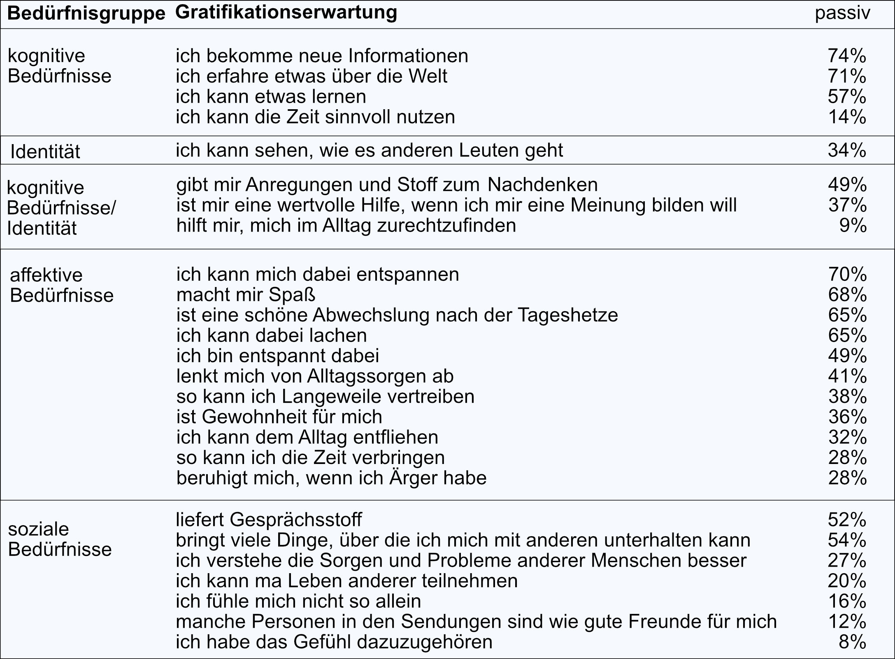

Gratifikationskataloge
Gratifikationskataloge
In der Uses-and-Gratifications-Forschung gibt es eine Menge Gratifikationskataloge. Sie führen nur die Gratifikationen auf, die tatsächlich durch Mediennutzung erreicht werden können. Diese Kataloge sind besonders für Medienanbieter und Werbetreibende wichtig, da sie, um die vorhandenen Bedürfnisse zu befriedigen, diese zuerst kennen müssen. Laut Kunczik & Zipfel (2001: 345) gibt es hauptsächlich vier Bedürfnisgruppen: kognitive Bedürfnisse, affektive Bedürfnisse, soziale Bedürfnisse und Identitätsbedürfnisse. Folgende Tabelle zeigt die Items einer Studie von Dehm und Storll (2003) zu den allgemeinen Gratifikationserwartungen von deutschen Fernsehzuschauern anhand der oben genannten Bedürfnisgruppen. Oft kann man jedoch Bedürfnisse nicht klar einer Gruppe zuordnen. Viele Gratifikationskataloge sind nicht direkt vergleichbar. Motive sind oft unterschiedlich benannt und die Werte weichen leicht voneinander ab.
Isreal-Studie
Isreal-Studie
Ein Beispiel zur Erstellung eines solchen Katalogs ist die Studie von Katz et al. (1973).
Sie erstellten für den israelischen Medienmarkt Nutzungsmotiv-Profile von Buch, Fernsehen, Radio, Zeitung und Kino.
Die Autoren stellen aus der sozial-psychologischen Literatur 35 soziale und psychologische Bedürfnisse zusammen
und klassifizieren sie mit einem dreidimensionalen System:
- Recource
- Referent
- Mode
Daraus ensteht folgende Klassifikation von Nut-zungsmotiven. (Tabelle) So kann ein Mediennutzungsmotiv auf mehreren Ebenen
dargestellt werden.